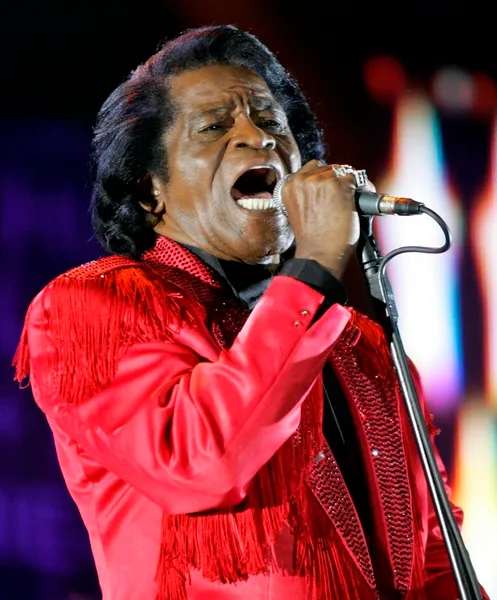

R&B
Entre as décadas de 1940 e 1950, nos Estados Unidos, depois da guerra, com o aumento do consumo e a migração da população negra para as grandes cidades, as diferenças entre o que era chamado de “música branca” e “música negra” começaram a diminuir, embora o racismo ainda existisse.
O R&B, que significa Rhythm and Blues, passou a ser usado pela indústria musical para substituir o termo "race music", que era uma expressão negativa para músicas feitas por artistas afro-americanos.
O R&B está muito ligado ao que hoje chamamos de Black Music. Com a popularização da guitarra elétrica e a mistura de ritmos como jazz, soul, funk, blues, rock, gospel, negro spiritual, jump blues e até música cubana, o gênero conquistou primeiro o público dos Estados Unidos e depois o público mundial.
Os principais artistas do R&B são:
- Beyoncé

- James Brown

- Chris Brown
- SZA

- Usher

- Drake